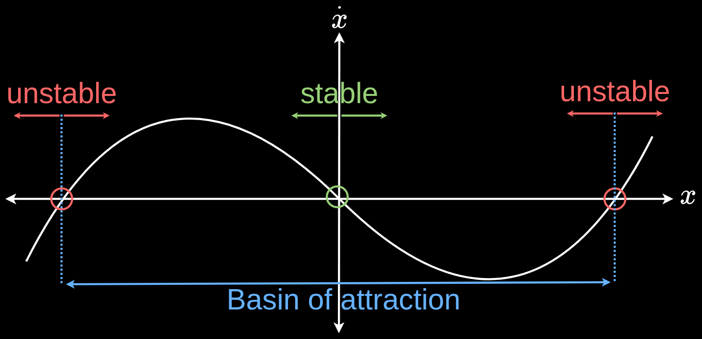

Last modified .
Non-linear systems are hard and there are too many unknowns. However, everything about a 1D non-linear system can be analysed.
Equilibrium points are at $\dot{x} = f(x) = 0$.Example: $\dot{x} = x^3$

Consider the rightmost equilibrium point. For a small nudge to the left or right, the system is going to move farther to the left and right respectively. It shoots off from the equilibrium point.
Every state within the 2 outer unstable points is inside a basin of attraction towards the origin. Every state outside of this region will blow up to infinity.